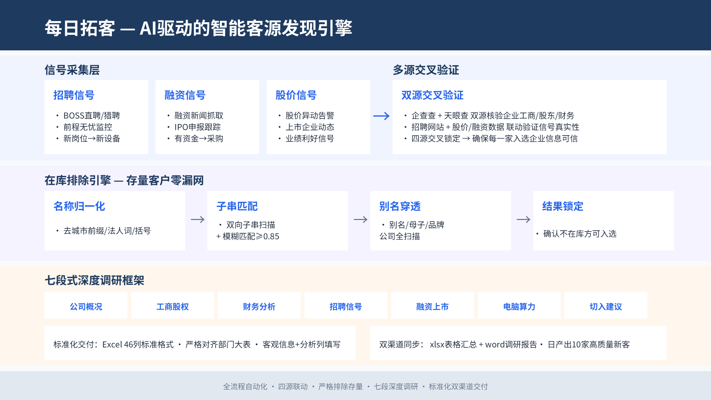
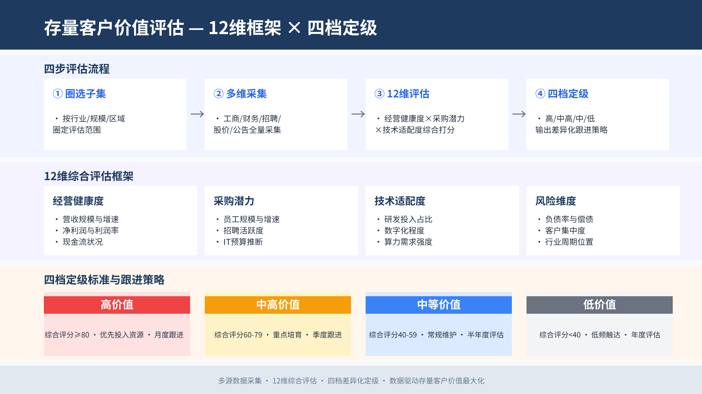
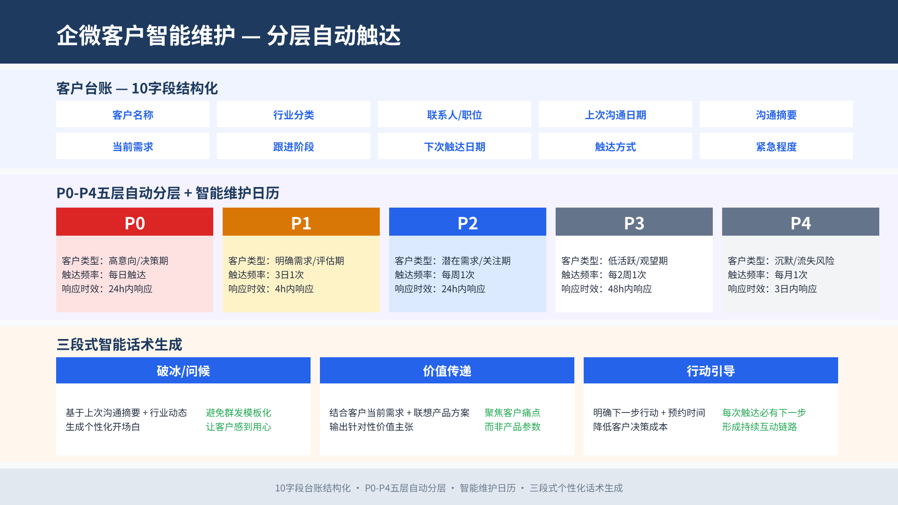
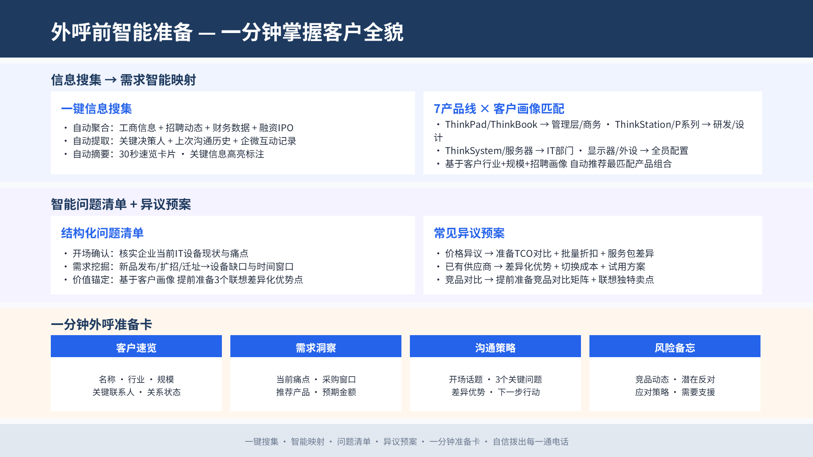

销售 AI 助手
销售全流程 AI 提效工具集
把销售「低杠杆但高频」的看信息、找客户、想话术、做准备交给 AI 引擎—— 1 人运营引擎、50+ 销售零部署使用，已在联想深圳销售部门全部门推广。 面向深圳 150+ 制造企业客户拓展场景。
解决什么具体问题
销售的时间大量消耗在「低杠杆但高频」的动作上——三个真实业务场景：
盯动态全靠人肉刷平台
没有全流程的销售 AI 助手，销售要自己去企查查、财报、公众号等多个平台刷零散信息，才能跟上行业和客户需求动态——费时、易漏、各人水平不一。
→ 客户情况动态监测引擎（每日拓客）企微维护没人管、各自为战
企微需要每周统一话术维持客户关系，但想话术要大量时间、部门没有专人负责：有人不发客户变「僵尸好友」，有人发硬广客户无感，好打法沉淀不下来。
→ 企微每周话术引擎（统一话术全员选用）客户不分级，潜力客户被遗漏
没有分级就没有节奏：不同价值的客户该用什么方式、什么频率联系全凭感觉，潜力客户容易被遗忘。
→ 客户分级 + 智能联络日历 + 针对性话术竞品分析：为什么不买现成工具
调研了市面五类现成方案（价格以厂商最新报价为准），没有任何一类能覆盖「监测 → 话术 → 分级」闭环：
| 工具类别 | 代表产品 | 覆盖环节 | 定价量级 | 为什么不够 |
|---|---|---|---|---|
| 拓客 SaaS | 探迹 / 销氪 / 励销云 | 找新线索 | 约 1.7 万元/年/10 账号起 | 只管「找客户」，无监测→话术→分级闭环；按账号收费、要登录独立平台 |
| 企业数据平台 | 企查查 / 天眼查 API | 数据原料 | API 按次计费 | 只供原料，监测后的动作全靠人工——对销售只是「多一个要刷的平台」 |
| CRM 自带 AI | 销售易 / 纷享销客 / Salesforce | 客户管理 | 300–4,000 元/人/年 + 重实施费 | AI 依附重实施主系统；50 人团队年费 7–20 万；没有「全员话术引擎」这种横向赋能模块 |
| 企微 SCRM | 微伴 / 卫瓴 / 尘锋 | 触达通道 | 约 6 千–1.5 万元/年起 | 话术库是人工维护的静态模板，不含外部动态监测与自动生成；按席位收费 |
| 通用大模型 | ChatGPT / 豆包等 | 单点生成 | 低价 / 免费 | 无法安全接入企业私有客户数据（合规风险）；输出质量依赖个人 prompt 水平，50 人各自用口径不可控 |
全流程整合
把动态监测、话术生成、分级联络串成一条自动化流水线，而非三个割裂的工具。
私有数据定制
引擎直接跑在企业自有客户名单与内部分层规则上，数据不出内网、定制零商务成本。
零部署推广
「1 人运营 + 50 人复制粘贴」的中心化形态，绕开按席位收费和全员培训两道最大的落地门槛。
工具设计原理：四大模块 × 中心化分发
落地形态为「中心化生产 + 全员分发」的 Skill 化引擎：1 人运营四大模块，产出物进汇总表 / 企微群 / 云文档，全体销售零部署、复制粘贴即用。

模块 1每日拓客引擎（智能线索挖掘）
- 三类商机信号（招聘 / 融资 / 股价异动）驱动，双平台交叉核验 + 2,627 家存量客户防撞库，日产 10 家高质量新客调研。

模块 2存量客户价值评估（漏斗分析）
- 12 维打分 × 四档定级，回答「谁先跟、多久跟一次」。

模块 3企微客户智能维护（AIGC 个性化触达）
- P0–P4 分层 + 联络日历自动排期，每周产出 8 类话题的统一话术供全员选用。

模块 4外呼前智能准备（实时话术推荐）
- 一分钟外呼准备卡 = 客户速览 + 需求洞察 + 沟通策略 + 风险备忘。
实质效果：时间基线对比
以一名销售每周的固定动作为基线，对比 AI 引擎接管后的耗时：
| 动作 | 原来（人工） | 现在（AI 引擎） | 节省 |
|---|---|---|---|
| 每周新客拓客 + 调研（刷企查查/财报/招聘/公众号 + 写调研报告） | 约 15 小时/周 | 引擎自动产出，人工复核 + 分发约 2–3 小时/周 | 约 80% |
| 每周想 5 条企微话术 | 约 2–3 小时/周（且常想不出来） | 10 分钟复制粘贴 | 约 90% |
| 外呼前准备（查信息 + 整理思路） | 约 20–30 分钟/通 | 1 分钟看准备卡 | 约 95% |
推广方法论：一个工具如何在 50 人部门活下来
背景阻力：部门 50+ 销售 AI 基础参差，直接发工具的结果一定是「没人装、没人学、没人用」。AI 工具的价值不在「做出来」，在「推得动」。
先对齐，不先推广
在部门周会上只讲「系统能解决什么」，不急着让任何人动手；把引擎生成结果先拿给 3–5 位资深销售校准，借他们的背书建立可信度。
中心化托管，零门槛起步
初期由本人 1 人运营引擎，产出物（线索汇总表、话术卡）通过部门大表 / 企微群 / 云文档自动化同步给全员，销售侧动作只有「复制粘贴」。
按上手度分批开放
观察谁在主动用、用得好，把引擎操作权限分批开放给愿意学的销售，形成「种子用户 → 小组长 → 全部门」的扩散。
Skill 化降学习成本
把整套工作流打包成 Skill（提示词封装 + 固定触发词），新人不需要理解原理，照模板输入即可跑出一致质量的产出。
周会复盘形成闭环
每周五回收话术回复率与线索反馈，回灌优化话题库与打分卡，让使用者感到「工具在听我们的」。